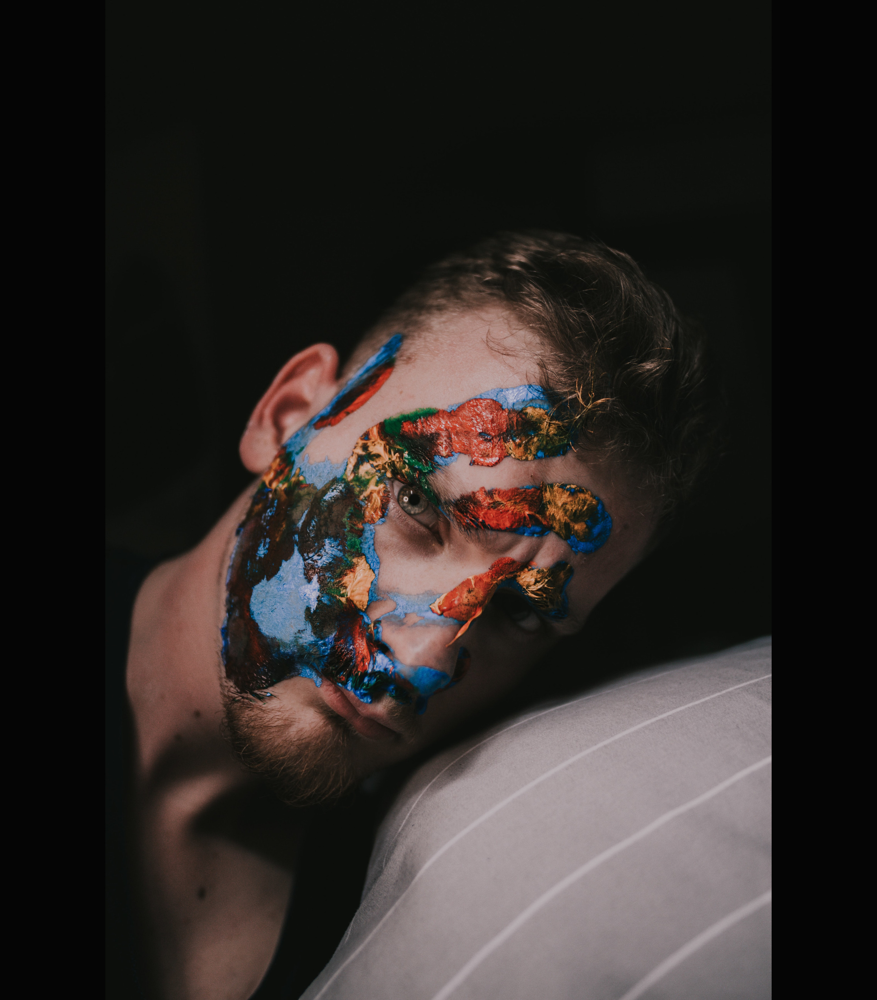

ADI
Założyciel studia. Tatuowaniem zajmuje się od 2008 roku. Z wykształcenia astronom, jego styl to mieszanka tatuażu neotradycyjnego, ilustracji i komiksu. Prace opiera na solidnych konturach, kontraście i mocnych kolorach. Obecnie skupia się głównie na dużych projektach, ale wykonuje również jednosesyjne tatuaże.
W swych charakterystycznych pracach opowiada historie surrealistyczne i realistyczne, baśniowe i całkiem poważne, nierzadko podkreślając je komentarzem społecznym – m.in. na temat feminizmu, seksualności, praw zwierząt.
MAJA

Malarka, ilustratorka, związana ze środowiskiem twórców ulicznych. Jej niezwykle barwne murale podziwiać można w wielu polskich miastach. Od 2016 roku rozwija warsztat tatuatorski.
Pierwszy sukces odniósł w wieku czterech lat dzięki pracy ,,Bociany Odlatują”. Rysunek zajął wysokie miejsce w konkursie plastycznym, a nagrodą był rower „Urwis”. Od 2015 roku skupił się na rysunku realistycznym i od tego czasu sukcesywnie budował portfolio z myślą o rozpoczęciu kariery tatuatora. Igor swój pierwszy tatuaż wykonał w roku 2018 w Kos Tattoo i jest zdeterminowany do tego, by sztukę tatuowania opanować w takim stopniu, jak sztukę rysunku.
MAX
CREW